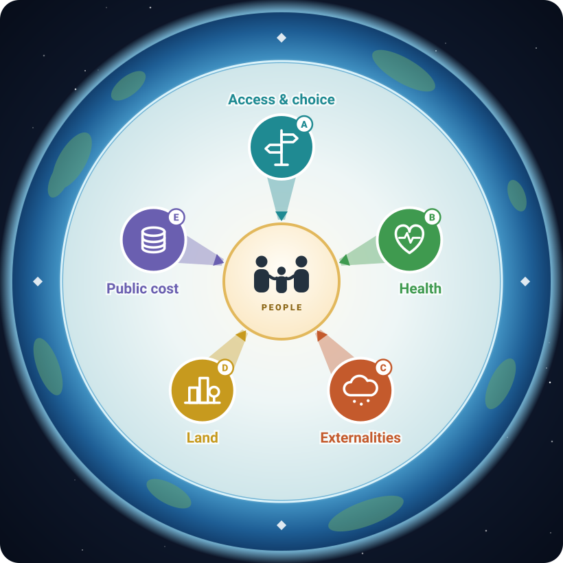
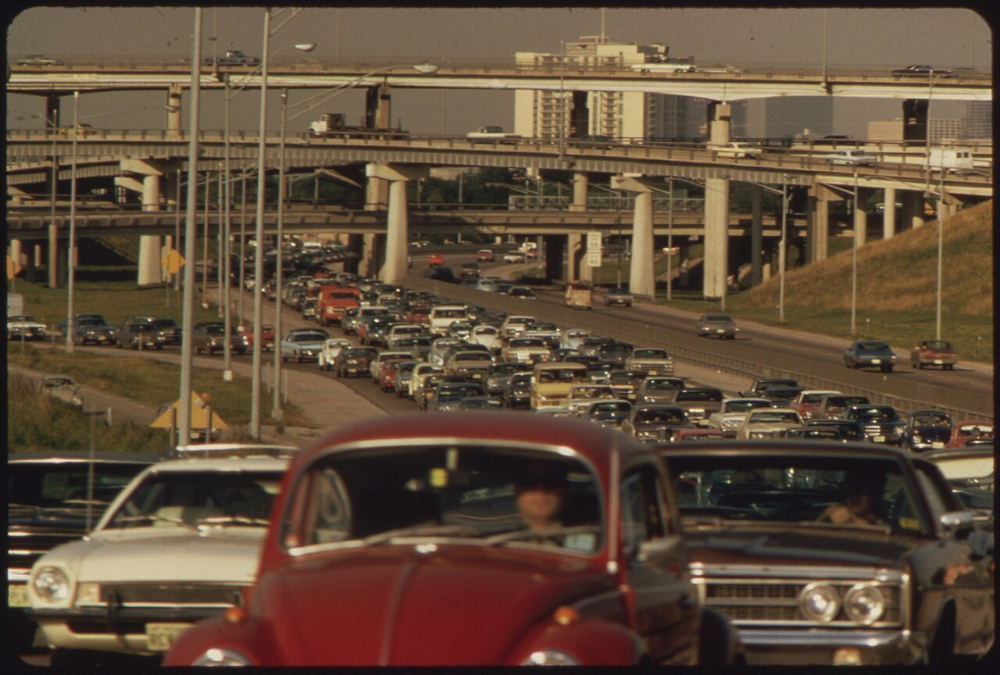
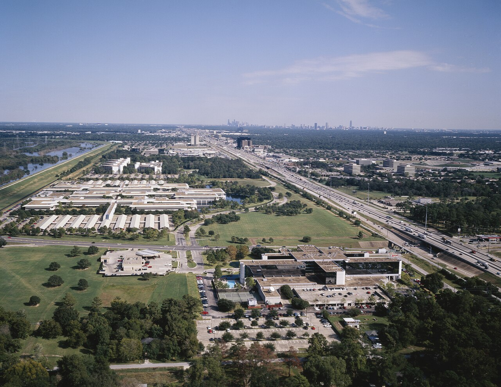
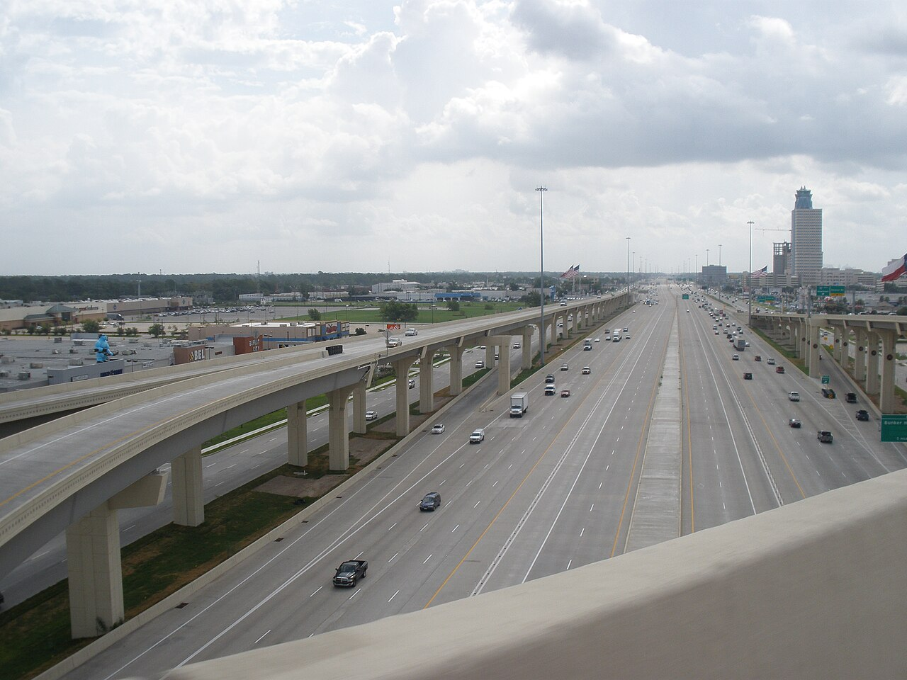
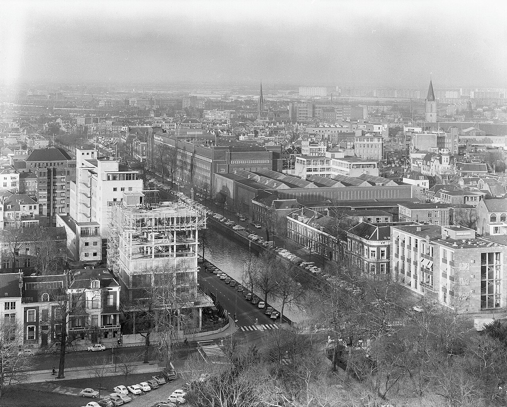
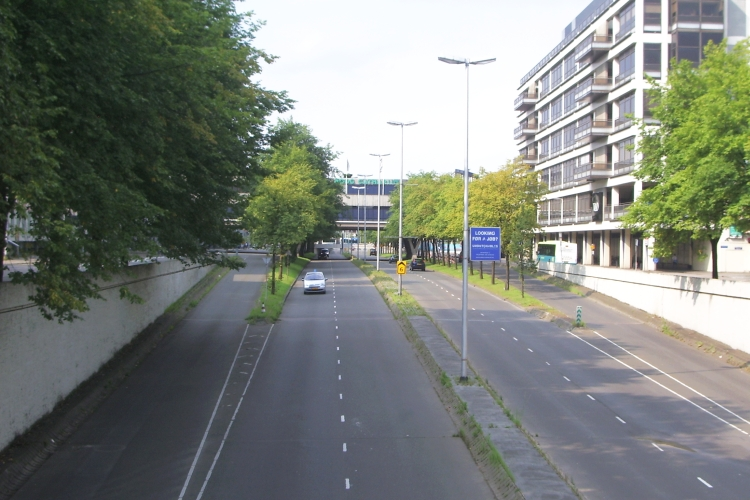
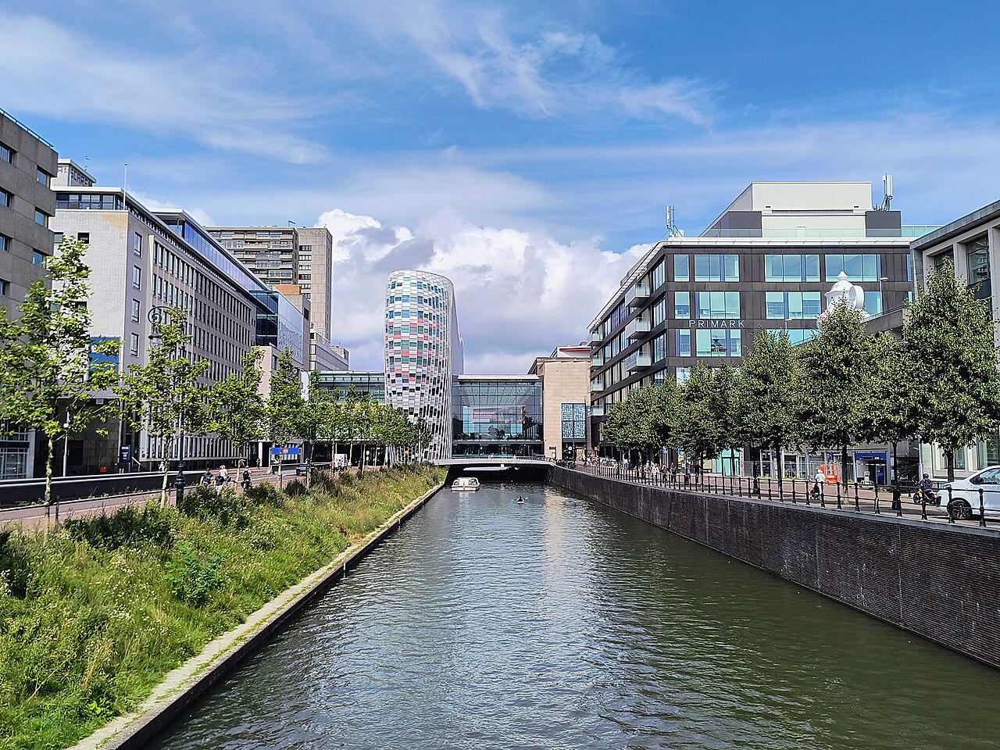

An open course
Welfare-Centered Transport Planning
The quest for designing mobility of the ideal city

Every morning, billions of people need to get from A to B: to work, to school, to a doctor, to a friend. The physics of that problem is the same everywhere. A body, a distance, a few minutes to spare. Yet the cities that people have built to solve it could hardly look more different.
In Houston, the answer is a car on a freeway that is, in places, more than twenty lanes wide. In Utrecht, it is a bicycle on a street where a motorway used to be. In Tokyo, it is a train that arrives every few minutes at a station surrounded by shops and homes. In Singapore, the right to own a car is rationed by a government auction. Each answer works, after a fashion. Each is the product of choices, and each leaves something on the table.
This course is about those choices: what transport systems around the world are actually built to achieve, what they should be built to achieve, and which ideas and tools from each country are worth borrowing. We start with two stretches of road.
1. Houston: the Katy Freeway

Interstate 10 west of downtown Houston, known as the Katy Freeway, was built in the 1960s. It had three lanes in each direction plus two-lane frontage roads and was designed for about 80,000 vehicles a day. It was part of the federal Interstate program created by the Federal-Aid Highway Act of 1956. That act officially named the network the National System of Interstate and Defense Highways, paid 90% of construction from Washington, and financed the federal share through a dedicated Highway Trust Fund fed by fuel taxes.
West Houston grew around the freeway. By 2001 the busiest section carried about 238,000 vehicles a day, roughly three times its design volume, with congestion lasting up to eleven hours a day. Texas planners concluded in a 1995 study that the road was obsolete. The study set four goals: improve corridor mobility and safety cost-effectively, limit harm to the environment and communities, build a balanced transportation system, and serve the region's land-use and development patterns. Alternatives were compared on vehicle-hours and vehicle-miles of travel, volume-to-capacity ratios, shift to high-occupancy modes, and level of service (LOS), using a regional model with a design year of 2020.
The answer was to rebuild. Between 2003 and 2008, at a cost of about US$2.8 billion, the Katy Freeway was widened to as many as 26 lanes counting frontage roads, including tolled managed lanes in the median. Much of the extra width came from the right-of-way of the abandoned Missouri–Kansas–Texas railroad, the "Katy" line that gave the freeway its name. The regional transit agency had been negotiating to buy that corridor for transit. The highway department acquired it instead.


At first it worked. The state reported that the morning trip from the Grand Parkway (SH 99) to the West Loop fell from 36 to 21 minutes. Within a few years, travel times were climbing again. Analyses of Houston TranStar data found that between 2011 and 2014 the morning commute on the corridor grew by about 30% and the evening commute by about 55%. A researcher at the Texas A&M Transportation Institute explained it in five words: "build it and they will come." He attributed the rise to the region's job and population growth. Others call it induced demand: when travel gets cheaper in time, people travel more and farther, until the road fills up again.
Both readings can be true at once, and neither proves the widening was a failure. The corridor now moves far more people than before, and growth that went to west Houston would have gone somewhere. The critics' data start three years after completion, so they show congestion returning, not congestion worse than before the project. Judging the project needs a counterfactual and a defined objective. That is exactly the point of this course.
Why visitors shake their heads
To many planners from Europe or East Asia, the Katy Freeway looks like the answer to the wrong question. The project's own criteria explain why it was built: vehicle-hours, volume-to-capacity ratios and level of service for a forecast of traffic in 2020. What those criteria leave out is what a visitor notices:
- A rail corridor was paved. The one piece of land that could have carried high-capacity transit into the city became more lanes for cars.
- Demand was treated as something to accommodate, not something the road creates. More capacity invites more and longer trips, and the time savings fade.
- Land, emissions, noise and crashes were not part of the score. A corridor of up to 26 lanes consumes land that would be priceless in Tokyo or Amsterdam, and more driving means more emissions.
- People without a car gain little. Teenagers, many older people, people who cannot afford a car or cannot drive are left with few alternatives.
Visitors can also miss what the design delivers. Houston offers fast car access to an enormous, dispersed job market, relatively affordable housing on cheap land, and a great deal of individual freedom over where to live and when to travel. These are real gains for the people who benefit. The question is not whether the Katy Freeway produced value. It is what it was optimizing for, and what that leaves on the table.
2. Utrecht: the canal that came back
In the same years that Texas was building its freeways, the Dutch city of Utrecht had a similar plan. A 1958 ring-road plan proposed turning the city's historic outer canal, the Catharijnesingel, into a road. From 1969 into the early 1970s, sections of the canal were drained and filled to build the Catharijnebaan, a sunken multi-lane urban motorway, and the station-area shopping center Hoog Catharijne was built over it. The aim was the same as in Houston: give cars fast access to the center of a growing city.



Then Utrecht changed its mind. In a 2002 referendum, residents backed restoring the canal. The road was dug out in stages, and on 12 September 2020 the Catharijnesingel reopened as a complete ring of water around the old city, with green banks, footpaths, and boats again able to circle the center. The City of Utrecht now calls the filling of the canal "a mistake from the past". The project won the European Prize for Urban Public Space in 2022. Utrecht is not alone. Paris turned its 1967 riverside expressway on the Seine into a park in 2016. Seoul tore down an elevated freeway carrying 169,000 vehicles a day to uncover the Cheonggyecheon stream in 2005. Tokyo is moving the 1960s expressway that covers its historic Nihonbashi bridge underground.
Same problem, opposite answers
Houston and Utrecht started from the same idea in the same decade and ended up moving in opposite directions. Utrecht did not stop caring about access. The city remains one of the most accessible places in the Netherlands, but it now provides most of that access by bicycle, train and bus. What it gave up is fast car travel through the center. What it gained is space, safety, quiet, cleaner air and a city that people want to spend time in. Houston made the opposite trade.
3. Why the answers differ
Neither city was irrational. Each was optimizing, explicitly or implicitly, for a different mix of goals under different conditions. Several drivers explain most of the difference.
| Driver | How it pushes toward Houston | How it pushes toward Utrecht |
|---|---|---|
| Land | Abundant, cheap land at the urban edge; growth can spread outward. | A dense, small country; every square meter of street has competing uses. |
| Input prices | Cheap fuel: taxes were about 17% of the US retail gasoline price in late 2025. | Expensive fuel: taxes were about 58% of the Dutch price (61% in Germany, 57% in France, 43% in Japan). |
| Money and institutions | Fuel-tax revenue earmarked for highways, 90% federal funding for Interstates. The cheapest project for a state was often more freeway. | General budgets and strong city governments that can trade road space for other uses. |
| The inherited city | Most of Houston was built after the car. | Utrecht's center was built centuries before it, on a human scale. |
| Shocks and movements | Cold War defense logic shaped the Interstate network. | Dutch road deaths peaked at 3,264 in 1972. The protest movement Stop de Kindermoord ("stop the child murder", 1973) and the oil-crisis car-free Sundays of 1973–74 changed public priorities. |
| Values | Individual freedom, private property, local control, suspicion of central planning. | Consensus, collective use of scarce space, a long tradition of planning. |
Put simply, transport policy is rooted in a local value system and shaped by constraints such as available land, the price of energy, the existing city, and the way infrastructure is funded. Change the values or the constraints and the "optimal" plan changes too.
4. A world of objectives
Look at more countries and the list of objectives grows. Some are explicit in law, others visible only in what institutions fund and measure. The seven role-model countries of this course each emphasize different ones, and two large countries outside that group remind us of objectives that Western curricula rarely name.
| Country | Objectives that stand out | Evidence |
|---|---|---|
| United States | Vehicle mobility and reliable car access across large regions; historically national defense; increasingly safety and climate in some states and cities | Level-of-service standards; the 1956 "Interstate and Defense Highways"; California's 2013 switch from LOS to vehicle-miles traveled |
| Germany | Equivalent living conditions across regions; "more mobility with less traffic" in cities; cost-effectiveness | Basic Law Art. 72(2) and the spatial planning act; federal cost–benefit analysis; the 2024 road traffic law reform adding climate, health and urban development |
| Japan | Accessibility through dense, rail-oriented urban structure; resilience to disasters; compact cities for an aging, shrinking population | Private railways that build towns around stations; the 2013 Basic Act for National Resilience; Location Normalization Plans |
| Singapore | Maximum access within a hard limit on land; managing demand directly | Road pricing since 1975; a quota on the number of vehicles; "20-minute towns and a 45-minute city" by 2040 |
| Netherlands | Safety by design; cycling as a mainstream mode; livable streets | Sustainable Safety; CROW design manuals; formal social cost–benefit analysis |
| Sweden | Safety as an ethical limit; accessibility and health–environment as co-equal goals | Vision Zero (1997); the two co-equal national transport-policy goals |
| France | Territorial equality ("no place too far"); climate; calm streets achieved by design rather than technology | The 1995 planning law's promise that no point of mainland France be more than 50 km or 45 minutes from a motorway or TGV station; a high official carbon value; roundabouts and Ville 30 |
| China | Economic development, national integration, global logistics competitiveness, industrial leadership | The 2019 Outline for Building a Strong Transport Country, with "1-2-3" travel- and freight-time circles; about 50,000 km of high-speed rail by 2025; purchase-tax breaks for electric vehicles |
| India | Affordability and equity for a majority who walk, cycle or use buses; growth through logistics | The 2006 National Urban Transport Policy's "equitable allocation of road space with people, rather than vehicles, as its main focus"; 23% of workers walk to work (2011 census); PM Gati Shakti (2021) |
China and India show that the list is not just about time, safety and the environment. Nation-building, economic growth, industrial strategy, logistics costs and affordability for the poor are transport objectives too, and they can dominate. So can resilience against earthquakes and floods, or regional fairness. A course that only teaches one national manual inherits that manual's objectives without noticing.
The lesson of this tour is simple. Every transport policy is a weighted combination of objectives, whether or not anyone wrote the weights down. The weights come from local values. The trade-offs are imposed by local constraints.
5. What transport should optimize for
If every policy is a combination of objectives, which combination is right? This course takes a clear position, and the rest of the course makes it precise.
First, transport exists to improve the welfare of the people who use it. Nobody wants a trip for its own sake. What people want is what the trip gives them: a job, an education, care, friendship, a choice of places to live and things to do. Speed, lanes and mode shares are means. Access to a good life is the end.
Second, it must do so while maximizing overall welfare, minimizing the harm that travel does to everyone else. That harm is spread in space: neighbors breathing exhaust, children who cannot cross the street, communities split by a highway, the global climate. It is also spread in time: emissions that accumulate, land that is paved for generations, a city shape that locks in car dependence long after the people who chose it are gone.
The opening illustration shows that idea. People are at the center. Five groups of effects flow toward them: their access and choice, their health, the externalities that travel imposes on others, the land that transport consumes, and the public cost of building and running it. Around everything run limits that many societies refuse to trade away: no deaths on the road, the carbon budget, land within limits, and a minimum level of access for everyone. In Module 1 these become a single welfare function. That gives you a way to compare the Katy Freeway and the Catharijnesingel on the same scale, and to see exactly where national practices weight things differently.
6. Why this course
Transport planners are usually trained within one national tradition. An American engineer learns the Highway Capacity Manual and level of service. A German engineer learns the HBS and the FGSV guidelines. A French engineer learns CEREMA's methods and French socio-economic appraisal. Each tradition is excellent on its own terms, and each passes on its own objectives as if they were simply "how traffic engineering is done".
This course pulls together a deliberately wider set of viewpoints, with two goals:
- A global framework for better planning goals. One explicit objective, centered on human welfare, in which the priorities of the US, Germany, Japan, Singapore, the Netherlands, Sweden, France and others appear as different weights and constraints. They become something you can compare, question and choose between, rather than inherit.
- Access to better planning tools. Many of the best tools were developed inside one national framework and are little known outside it. Examples include Japan's verification tests for traffic simulators, France's empirical roundabout capacity model, Sweden's Vision Zero design logic, Dutch social cost–benefit analysis, and Singapore's road pricing. Where the originals exist only in Swedish, German, Japanese, French, Dutch, Spanish or Italian, we summarize and translate them.
Where to go next
Module 1: What should a transport system optimize?
The welfare objective, term by term, and why the classic traffic-engineering objective is a special case of it.
Syllabus
15 modules in four parts: the objective, people and places, traffic engineering, policy levers, plus a capstone.
Countries
Seven role models and eleven more countries: institutions, ideas, failures and teaching material.
Objective explorer
Rank four plans for one corridor under American, German, Japanese, Singaporean, Dutch, Swedish and French readings of the objective.
Katy Freeway: FHWA project profile; Texas A&M Transportation Institute, report 0-6688-1 (2013); Houston Press (2008); KPRC (2014); City Observatory (2015, an advocacy source); MKT corridor. 1956 Act: FHWA highway history. Utrecht: City of Utrecht (Dutch); OKRA. Seoul: Landscape Performance Series. Fuel taxes: Japan Ministry of Finance chart of IEA data, Q4 2025 (Japanese). Germany: Basic Law Art. 72. France: Sénat debate on the 1995 law. Japan: Basic Act for National Resilience. China: 交通强国建设纲要 (2019); high-speed rail length, end-2025. India: National Urban Transport Policy 2006; Goel (2018), census commuting data.